學習理念
「刷題也許能應付考試，但經歷才能應對人生。」平興國中自 105 學年度成立數理資優資源班，採分散式資優資源班模式，數學與自然領域抽離至資優班以小組精緻授課，讓學生在觀察、提問、探究與實作中累積面對未來的能力。
設班理念與課程架構
課程設計採用 Renzulli 三合資優教育充實模式（The Enrichment Triad Model）與平行課程設計，將核心學科內容濃縮精煉並依學生步調彈性規劃，圍繞三大主軸展開：
- 能力養成：創造力課程、程式設計、獨立研究
- 拓展視野：團體輔導、科學閱讀、校外教學
- 提升涵養：生物專題、自然專題、數學專題
回應中學資優生的四項學習需求
參照臺灣師範大學游森棚教授提出的中學資優生學習需求架構，課程著重四個面向：
- 高度挑戰性活動與高層思考：超越課內重複練習，投入深度思考與創新挑戰。
- 跨學科探究與知識連結：探索嶄新領域，理解不同學科知識間的內在關聯。
- 與高智能同儕討論：在小組共學中與同儕切磋思辨，激發潛能與創意。
- 創造、生產與解決真實問題：透過實作與專題研究，將知識應用於生活並提出解方。
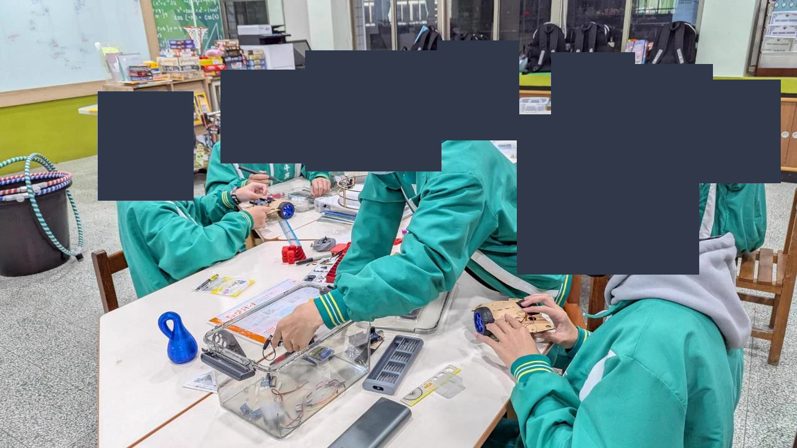
破除迷思與適性支持（Double Care）
資優班不是升學班，資優生也各有擅長領域與成長難關。分散式資優資源班結合「原班照顧」與「資優資源」的雙重支持（Double Care），搭配團體輔導、活動策畫、教師共備社群與升學進路引導，陪學生穩健累積能力與經歷。
三年課程
平興數資三年課程依「七年級啟發與試探、八年級實作與探究、九年級適性分流」循序規劃，各年級並串聯校外教學、專題講座、成果發表、薪火相傳與學科競賽，讓學習從課堂延伸到真實世界。
七年級｜啟發與試探（科學探究與實作入門）
安排課程：數學、數學專題、生物實驗、科技專題、獨立研究、團體輔導、創造力
- 核心學科精緻化：採小組授課濃縮核心內容並加深加廣，依學生學習步調奠定數理基礎。
- 基礎實驗與科學觀察：從顯微觀察、徒手切片、酵素與光合作用、DNA 粗萃取等生物實驗入門，建立觀察與實驗紀錄習慣。
- 科技實作與創意思維：結合創造力課程、3D 列印、程式設計與 AI 協作，將想像化為實體作品。
- 適應支持與研究啟蒙：透過團體輔導協助適應資優學習節奏，並開始接觸獨立研究的方法與發想。
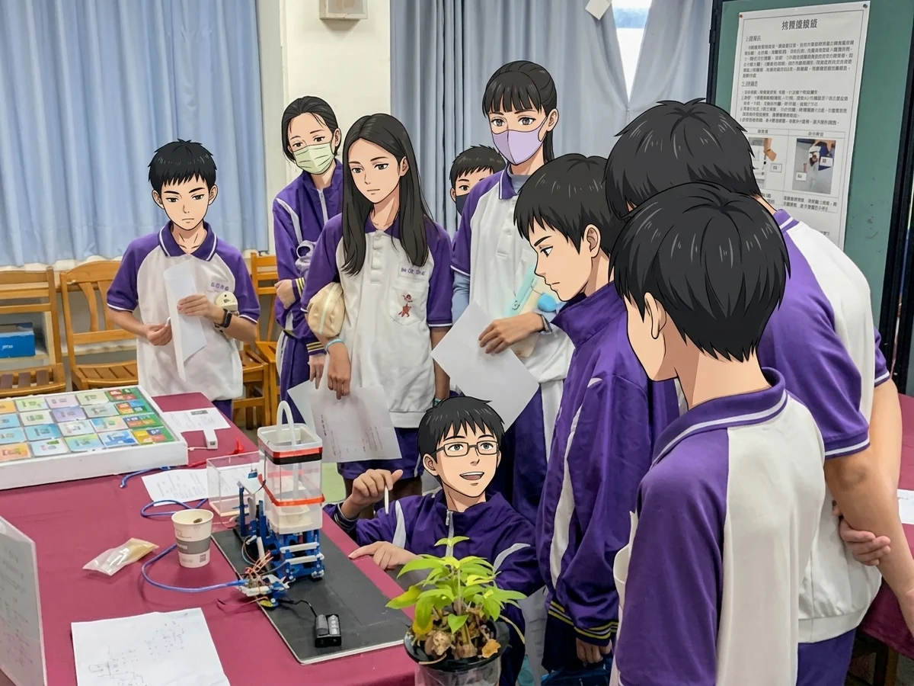
八年級｜實作與探究（獨立專題與手腦實作）
安排課程：數學、數學專題、幾何專題、理化、理化實驗、獨立研究、團體輔導、科學閱讀
- 引導式理化統合實驗：涵蓋物質密度、混合物分離、透鏡成像、氣體製備與反應速率等主題，強化變因控制與實驗分析能力。
- 數學與幾何深化：透過數學專題與幾何專題訓練邏輯推理與空間思考，並以科學閱讀拓展跨領域視野。
- 獨立研究專題實踐：綜合各科所學，從真實問題出發設計研究並完成科展或發明展作品，培養獨立解決問題與成果發表能力。
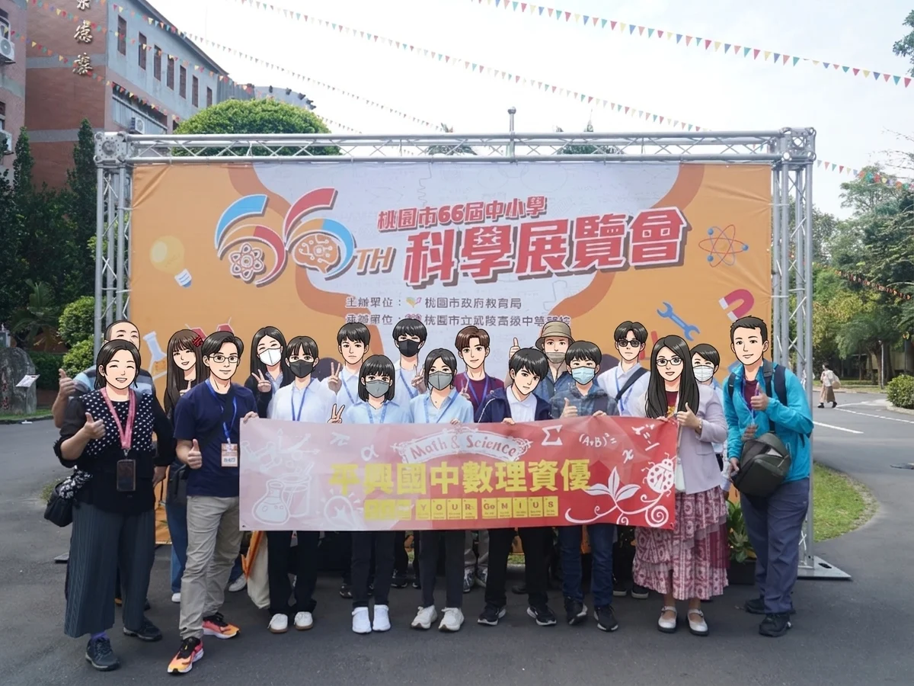
九年級｜適性分流（會考銜接與升學進路）
安排課程：數學、數學專題、幾何專題、理化、理化實驗、升學與競賽適性輔導
- 專題深化與競賽培訓：進行進階數學、幾何與競賽試題研討（如 JHMC 數學競賽、探究實作競賽等），銜接高中預備課程。
- 高階理化實驗探索：延伸至單擺、牛頓定律、歐姆定律、鋅銅電池、電解電鍍與氧化還原等進階實驗。
- 多元升學與適性引導：配合科學班、數理資優班、各校特色班與會考免試等進路，進行專題精修與生涯方向輔導。
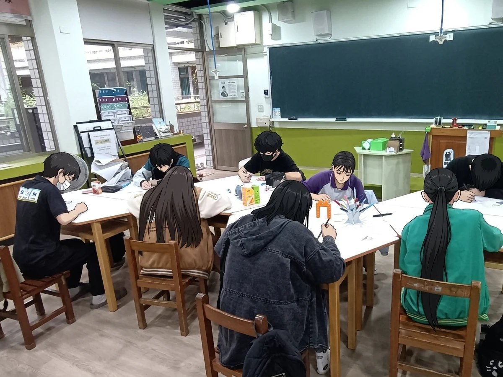
跨年級共同學習體驗
各年級皆透過校外教學（中研院開放日、中央大學太空酬載實驗室、北醫急診室體驗、基隆海科館、台大醉月湖淨水工程、台北科教館）、大學教授專題講座、密室逃脫嘉年華等活動策畫，以及成果發表與薪火相傳，在真實場域中整合所學與團隊協作。
課程整體規劃 PDF
科學探究
三年實驗課程表
七年級
- 觀察口腔皮膜、洋蔥表皮、鴨跖草葉下表皮、水蘊草、茸毛、葉上表皮
- 徒手切片練習
- 觀察水中小生物
- 食物中糖類的測定(本氏液及斐林試劑)
- 酵素的作用
- 光合作用的探討
- 觀察植物的水分運輸構造
- 觀察血液的流動
- 光對植物生長的影響
- 呼吸作用觀察
- 解剖軟絲
- 解剖豬心
- 植物營養器官繁殖
- 花的觀察
- 細菌之觀察及格蘭氏染色
- DNA粗萃取
- 化學晶球製作(海藻酸鈣)
八年級
- 探討物質質量與密度的關係
- 混合物的分離
- 氧氣的製備及性質
- 透鏡成像觀察
- 插針法及各種透鏡性質
- 色光與顏色的關係
- 溫度計的原理
- 熱量與物質溫度變化的關係
- 探討化學反應前後質量差距
- 金屬對氧的活性
- 製備二氧化碳及探討鎂在二氧化碳中的可燃性
- 各種金屬的焰色實驗
- 探討電解質的性質
- 探討會與大理岩反應的物質
- 溫度與反應速率的關係
- 乙酸乙酯的製備
九年級
- 探討鉻酸根在酸鹼中的顏色
- 單擺的擺動週期
- 探討作用力與加速度的關係
- 槓桿原理與其應用
- 歐姆定律與其應用
- 插針法及各種透鏡性質
- 配置指定濃度之酸鹼溶液並分辨出未知之酸鹼指示劑
- 製作鋅銅電池
- 電解水
- 電解硫酸銅溶液
- 電鍍實驗
- 觀察電流的磁效應
- 觀察感應電流
- 以各種檢驗法判斷出未知溶液
- 以各種檢驗法判斷出未知鹽類
- 斐林試劑之配製及還原糖的檢驗
- 細菌之觀察及格蘭氏染色
- 反泡泡之原理及實作
- 一元硬幣製造金幣銀幣(氧化還原之探討)
實驗設備完善充實
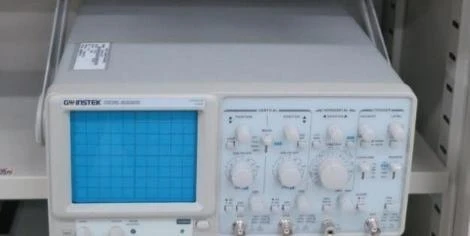
示波器與電子電路
搭配信號產生器和數位式電源供應器，觀察電路中的訊號。
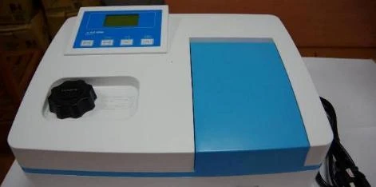
分光光度計
測量樣品對光的吸收，讓顏色變化有數據可比較。
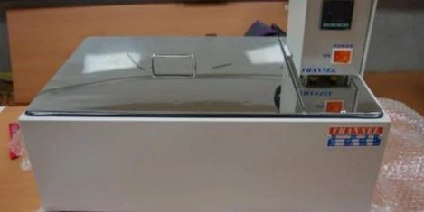
恆溫水槽
讓樣品維持在指定溫度，便於比較不同實驗條件。
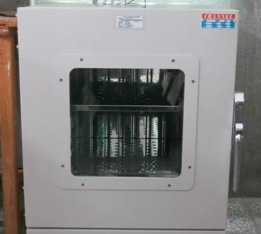
恆溫培養箱
提供穩定的溫度環境，方便持續觀察樣品的變化。
其他器材包括陶瓷面板電磁攪拌器、光電計時器、多功能雷射測距儀，以及實驗清洗水槽。
學生研究案例
望「桃」興「炭」——自製生物炭批次反應淨水槽
研究起點是家鄉溪流污染，以及被丟棄的水蜜桃果核能否再利用。學生將桃核製作成生物炭，結合批次反應槽，研究離子與非離子模擬污染物的處理。
方法與已知結果
研究摘要記載，團隊製作設備並驗證可降低模擬污染物濃度，持續尋找更好的反應條件。摘要未提供完整數據或去除率，因此這裡呈現研究方向與已記錄的結果。原網站記載此作品獲第 65 屆全國科展第三名，摘要另記桃園市賽第一名。
從葉片發現新問題
「樹之精靈鐘乳體」由觀察植物結晶開始。學生進一步追問校園哪些植物具有鐘乳體、如何形成及其生態角色，查閱文獻並設計探究實驗。
創客作品
生活中有哪些小麻煩，可以用自己的設計解決？在平興數資教室，學生從觀察和釐清需求開始，畫出構想、挑選材料與元件，再把點子做成可操作的原型。測試時遇到問題，就回頭調整程式或機構，看看改動後能否更接近原先的目標。
教室備有開發板、感測器、智慧小車套組，以及 3D 列印與雷射切割設備。從能偵測空氣品質的智慧口罩盒，到用腳觸發感測器的摺衣機，這些作品呈現了學生如何把程式控制、電子元件和機構設計用在日常生活中。
學生作品
-
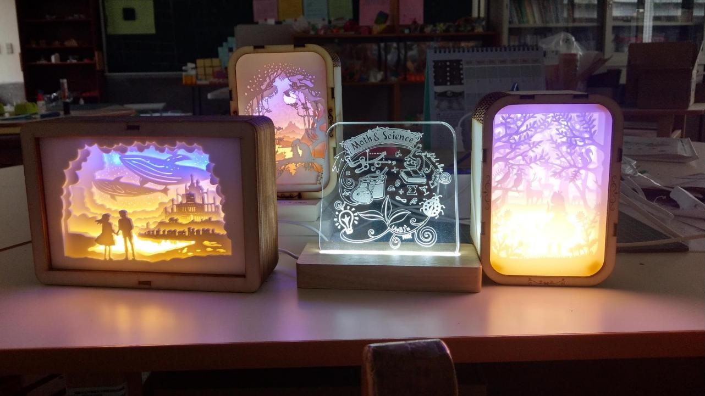
創客燈飾
從簡報中的剪影燈飾與雕刻燈牌，看材料加工如何和燈光結合。
-
智慧口罩盒
作品結合口罩收納與空氣品質偵測。依研究摘要，設備每小時偵測一次，空氣品質較差時透過聲光及訊息通知，並可充電、以背面魔鬼氈固定在背包或提袋。
-
自己摺起來
使用者開啟機器並放上衣服，以腳觸發超音波感測後進行自動摺衣，摺衣板倒扣讓衣物落入櫃內，再回到可繼續摺衣的狀態。另設計結合衣物資料庫、天氣資料與 AI 的穿搭建議系統。
校內設備與實作套組
-
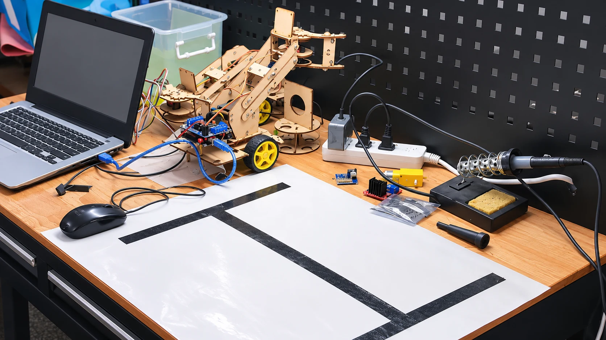
智慧小車套組
透過小車組裝、寫程式和路線測試，練習讓車輛依感測結果調整方向。
-
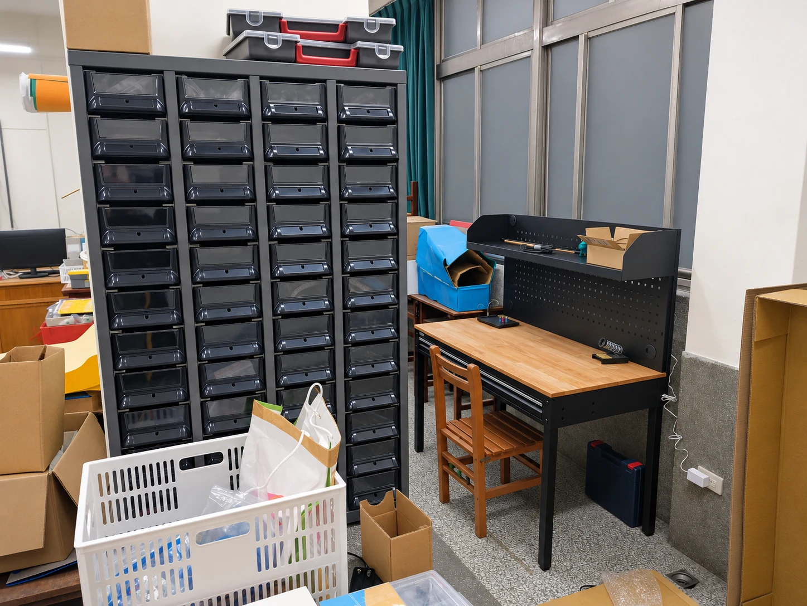
開發元件
按用途整理感測器、燈光模組和馬達等零件，方便在組裝原型時選用、接線與測試。
-
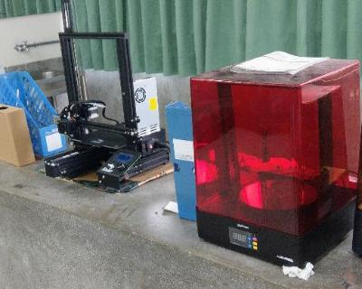
3D 列印設備
把電腦模型做成外殼、支架或機構零件，裝配後還能依測試結果修改設計。
-
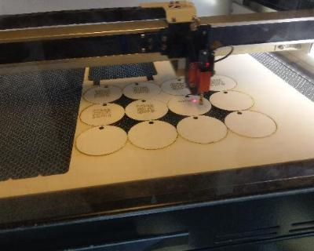
雷射切割設備
在板材上切出零件或雕刻圖案，用於組裝結構、製作面板與燈飾。
-
開發板與電子元件
Arduino、ESP32、Web:AI 與 micro:bit 套件，可用來練習讀取感測器、控制燈光或驅動馬達。
-
HuskyLens 智慧鏡頭
可練習物件辨識與追蹤，把辨識結果交給程式，作為控制小車或互動裝置的依據。
圖書與桌遊
平興數資教室的書櫃有科普與數學讀物、科學雜誌和科學桌遊，可以從閱讀或遊戲找到想深入探究的題目。
-
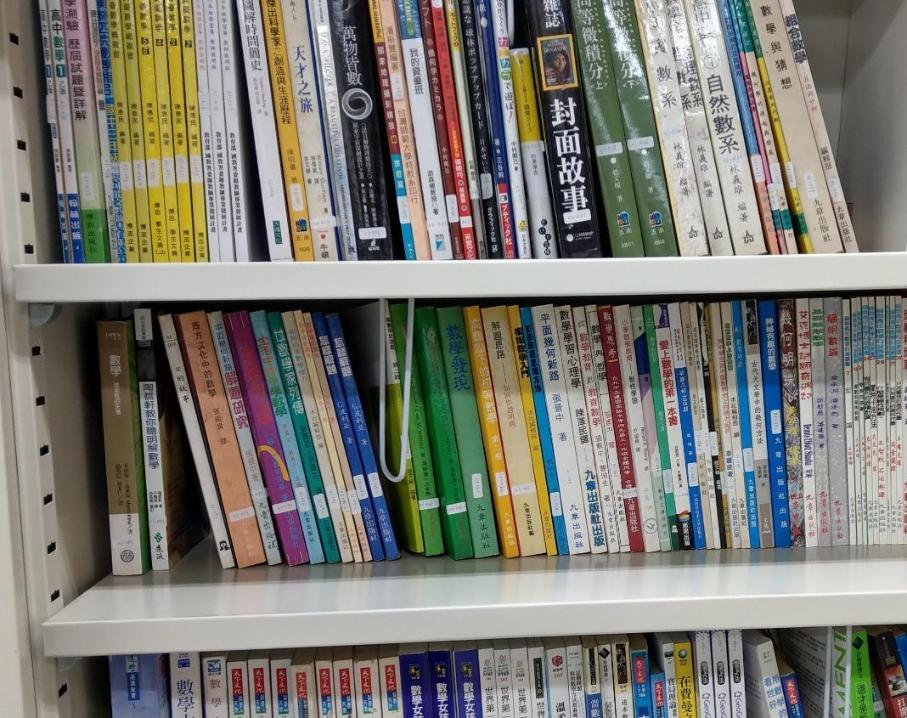
科普叢書
從自然現象、科學發現與生活科技找題目，延伸課堂所學，也能作為專題閱讀的起點。
-
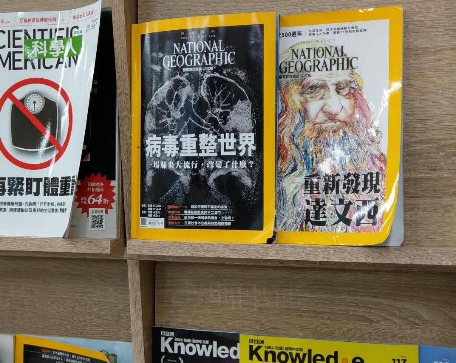
科學雜誌
簡報列出 BBC Knowledge 與《科學月刊》。閱讀短篇科普文章，了解研究如何提出問題與驗證想法。
-
數學競賽叢書
挑選題目練習推理、整理不同解法，也能和同學討論同一道題有哪些切入點。
-
科學桌遊
透過觀察、合作與策略選擇，練習預測結果。遊戲結束後，可以比較不同做法如何影響結果。
最新消息
-
置頂公告
桃園市國中資優鑑定說明會@平興國中
本校將於 – 舉辦「116學年度桃園市資優鑑定說明會」，內容包含鑑定流程說明、資優課程介紹、校友分享及教學區導覽，歡迎小五、六年級學生與家長參加。
📍 地點：平興國中1樓視聽教室
☎️ 洽詢：(03) 491-8239 分機 640、670
🔸 期待與您相見，一起陪伴孩子探索更多可能！
活動報名 ↗
-
升學捷報
李姸均、黃于展錄取中大壢中數理資優班
本班應屆畢業生李姸均、黃于展錄取中大壢中數理資優班，其中李同學憑全國科展第三名的成績優先錄取，黃同學以優異的數學成績高分錄取，兩位同學皆展現他們在數資班的學習成果，展現他們的優勢能力，獲得肯定，恭喜他們。
-
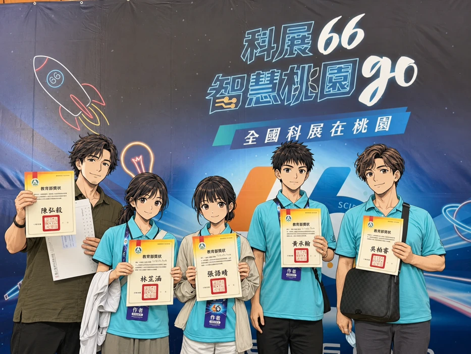
全國科展應科(三)獲獎
贏在氣泡點-自製低動力微細氣泡管及其應用
朱宸緯、李紫晴、王彤綺以自製低動力微細氣泡管，探究氣泡生成與實際應用的可能性，榮獲 全國科展佳作 。 團隊從桃園市科展一路挑戰全國舞台，將科學探究轉化為可實作的研究成果，展現扎實的研究能力、創意思考與合作精神。
-
桃園市科展
66桃園市科展八年級全體獲獎
朱宸緯、李紫晴、王彤綺榮獲應科（三）第一名，前進全國；陳彥澄、温傑宇、宋泓錡榮獲數學科第三名；温欣庭、龐羽彤榮獲生物科第三名。感謝蔡忠穎、蕭雅夫、陳隆期、廖俊傑老師辛勤指導。
-
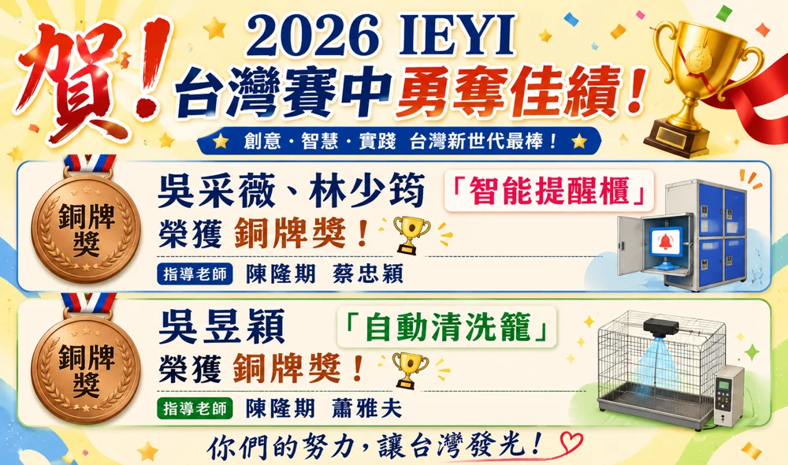
IEYI 台灣賽
2026 IEYI 台灣賽勇奪佳績
吳采薇、林少筠「智能提醒櫃」榮獲銅牌獎；吳昱穎「自動清洗籠」榮獲銅牌獎。學生展現卓越創意，將想法化為實際可使用的作品。
-
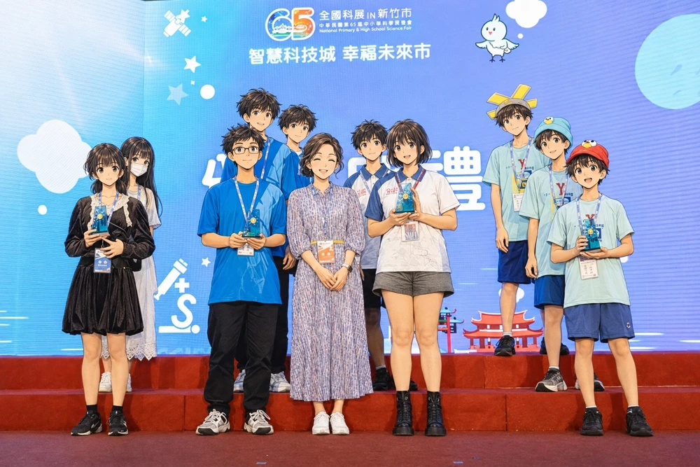
全國科展
65全國科展第三名
李姸均、沈軒毅榮獲第65屆中小學科展全國第三名，感謝師長的指導。
-
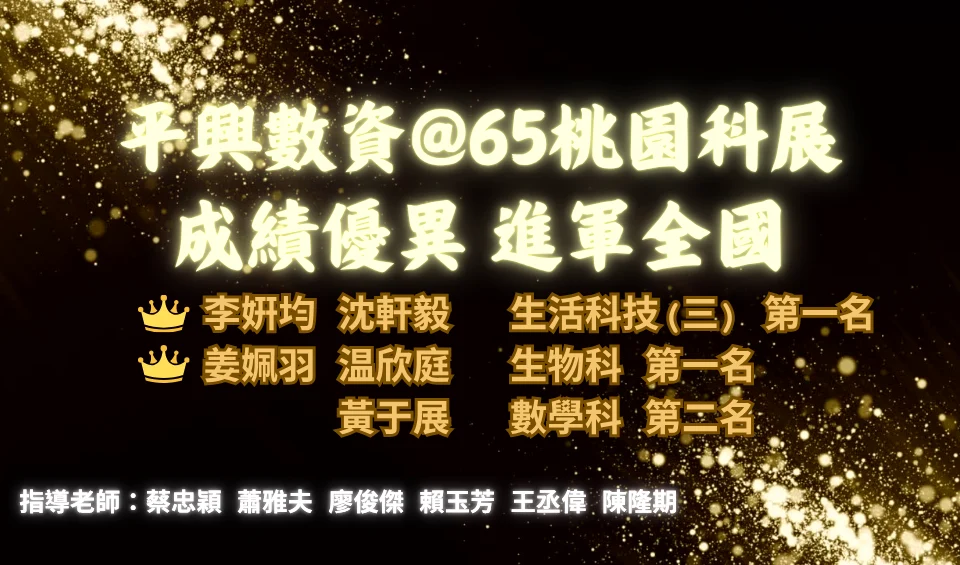
桃園市科展
桃園市科展狂霸雙第一
獲得兩件第一名、一件第二名的頂級成績，締造校史紀錄。
-
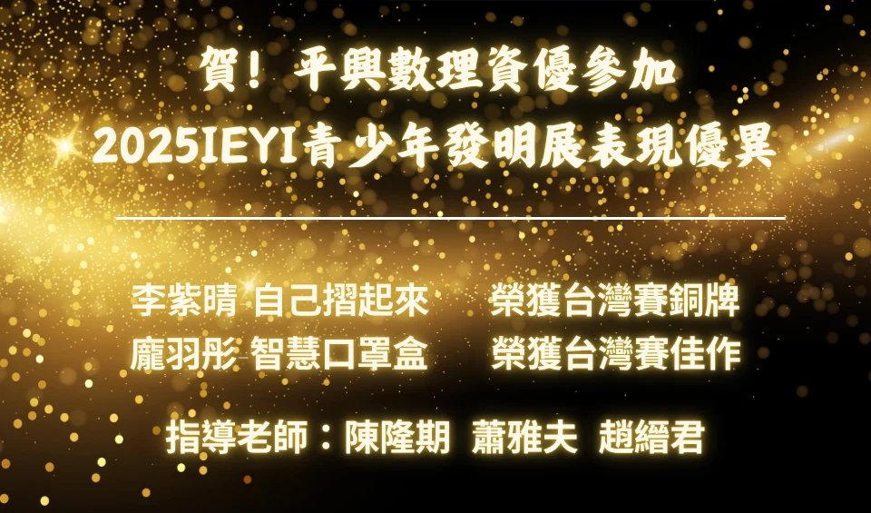
IEYI 台灣賽
2025 國際發明展殊榮
數資學子憑藉智慧口罩盒與自行折壘作品，再度閃耀獲獎。
前往原網站查看最新消息
進一步了解平興數資
如何安排資優學習？
採分散式資優資源班，結合原班照顧與資優資源。課程包含小組授課、探究實作、資訊專題、獨立研究及適性輔導。
還有哪些專題學習機會？
簡報介紹平興專題研究社，提供對專題研究有興趣的同學另一個參與管道。實際開課與參加方式可向學校詢問。
LINE 聯絡平興數資